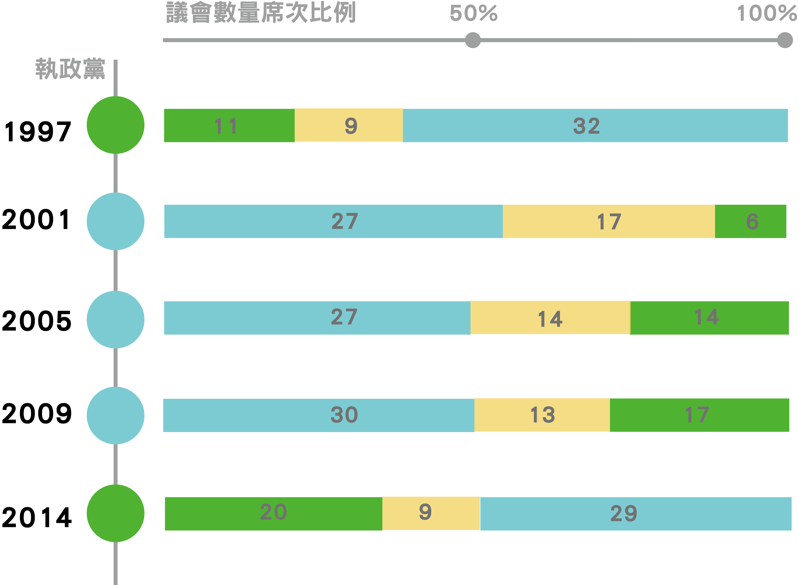

記者 陳貞樺、蔣宜婷
製作 洪立遠、潘冠綸、吳旻誠
資料來源 中央選舉委員會
0 1 2 3 4 0
1997
1993
2001
2005
2009
2014
>60%
+30%
觀音鄉
新屋鄉
大園鄉
蘆竹鄉
楊梅鎮
桃園市
大溪鎮
中壢市
龍潭鄉
龜山鄉
八德市
平鎮市
復興鄉
+30%
>60%
←越偏民進黨
越偏國民黨→
各區政黨傾向搖擺次數
當選：國民黨劉邦友
國民黨拿下7個鄉鎮市
，復興鄉兩黨差距更高
達55%。
當選：民進黨呂秀蓮
桃園縣首次由民進黨拿
下，高達5個鄉鎮市翻
轉成綠營票倉。其中僅
大園鄉翻盤投國民黨居多。
當選：國民黨朱立倫
8個縣市翻轉，上屆改投
民進黨的5個鄉鎮市再次
倒戈。但大園鄉仍特立獨
行，由國民黨翻盤為民進黨。
當選：國民黨朱立倫
朱立倫連任，各鄉鎮市的投
國民黨的比例皆增加，而大
園鄉更翻轉成頭國民黨居多。
當選：國民黨吳志揚
國民黨贏得並不輕鬆。其中
大溪鎮、大園鄉跟蘆竹鄉反
轉成民進黨得票佔多數。
當選：民進黨鄭文燦
睽違14年，民進黨再次拿下桃
園。除了讓三個區翻轉成綠營
票倉外，更讓擺動次數極低、
從未民進黨多數的八德區翻盤。
藍鐵票區也搖擺 2014民進黨奪桃園
觀音新屋復興20年無所動 大園政黨傾向不定
17年來首次 議會綠席次過三成

藍：國民黨、綠：民進黨、黃：無黨籍或其他政黨
於桃園市，民進黨並非首次執政，但距離上次執政卻已達13年之久。而這次更是民進黨第一次在市議會拿下20席、佔比例34%。
1998年，桃園市雖為民進黨執政時期，但其市議會席次僅有11席、佔21％，面對高達32席、61%國民黨席次，朝小野大的議會對民進黨執政並不有利。而從2001年，國民黨再次讓桃園市變回藍天時，其市議會也都是藍營席次幾乎過半的情況，國民黨十幾年來一直享有相對有利的執政條件。